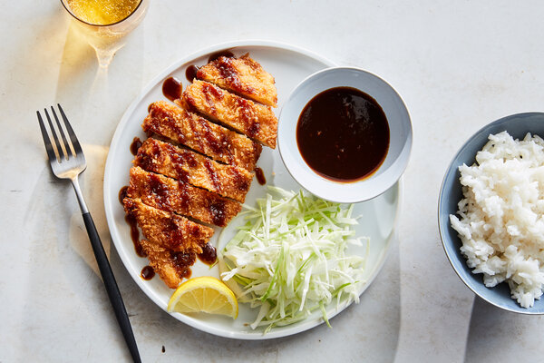

Chicken Katsu

Katsu itself is a japanese dish, it is a cutlet of meat, usually chicken(Chicken katsu) or pork(Tonkatsu) coated in panko crumbs and deep fried.
This dish is very popular in Japan.
This is a recipe for chicken katsu, easy to make, and also does not require deep frying.
In this recipe, we will be making the chicken katsu by frying it in a pan instead of deep frying
Ingredients
- 4 chicken breasts
- all-purpose flour
- 2 eggs
- panko crumbs
- salt and pepper to taste
- vegtable oil
Steps
- Flatten the chicken breast by pounding them, to about 1.5cm thick.
- Season with salt and pepper to taste.
- Coat seasoned chicken breast in flour.
- Beat the eggs, then coat chicken breats in the egg.
- Fully coat chicken breasts in panko crumbs.
- Heat oil on medium to high setting, place chicken breasts in hot oil, 3 to 4 mins on each side(or until golden brown).
- Remove from heat and drain oil on a paper towel.
Back to recipes